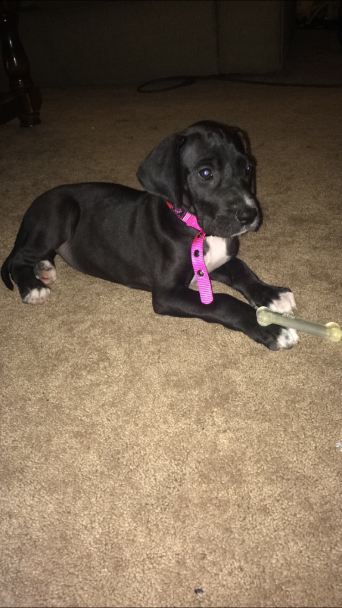

This is my dog, Zoey. She is a pure bred great dane and just over 3 years old. We first met on my birthday in June in 2016, and she's been by my side ever since!
Some of her favorite things include:
Going for walks with Charlie
Chasing Pepper and June around the house (her cat siblings)
Blowing off energy at the dog park and acting a fool
Being lazy and sleeping on the couch
Zoey was born. She was one of 9 puppies!
I first met and adopted Zoey on my birthday. She was only 7 weeks old. This is her first photo.

In just a short couple weeks, you can see how much she has grown. Look at those paws!
Zoey getting a taste for the finer things in life - her first ice cream dog treat!
Here's Zoey at roughly 6 months old. She's got legs for days!
Jumping ahead a bit, you can see how much Zoey has grown after turning just 1 year old. Here she is making herself right at home after our first move. This is her preferred way to sit and watch tv.
Here's Zoey lounging on her favorite outdoor raised bed. She's just a little over a year in this photo, weighing around 70ish lbs.
Here, Zoey is around 1 1/2 years old. We just started dog school at Rosie Dane Dog Training. The training was primarily outside, which is why you see Zoey sporting her new jacket.
Here's Zoey's first real experience playing in the snow! She is chasing my brother's dog, Jasper, around in the backyard.
This was a very proud dog-dad moment. The training classes we had been working through the past few months paid off and Zoey passed the AKC Novice test and also the Canine Good Citizen Test!! Check out the requirements here:
AKC NoviceCanine Good Citizen
We moved again, and this time Zoey was having to adjust to living with new roommates. Her and Charlie bonded almost immediately and now inseparable. Charlie is my girlfriend's dog; he is a 6 year old bloodhound mix and a 13/10 good boi!
Speaking of new roommates, Zoey had to adjust to living with cats. She had no previous exposure to them, and was very, very curious. Here she is with one of our cats, June, when she was a kitten!
As you can see, it took just a short while for them to get comfortable with one another. Now they routinely play and lounge around together!
Whenever we go out of town, my mom is always happy to watch our dogs. She has a fenced off area where they can run around and be mischievous. As you can see, here's Zoey trying to dig to China, while Charlie acts as lookout.
Zoey turned 3 this month, and she was in need of a new collar. Here she is proudly showing it off! She is fully grown at this point, weighing in around 105lbs!